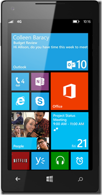
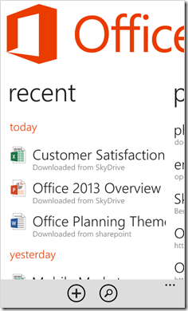
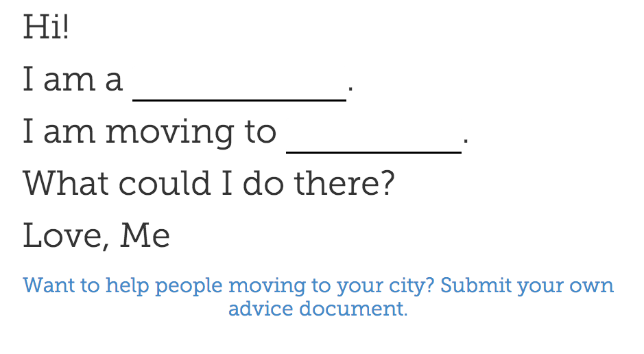
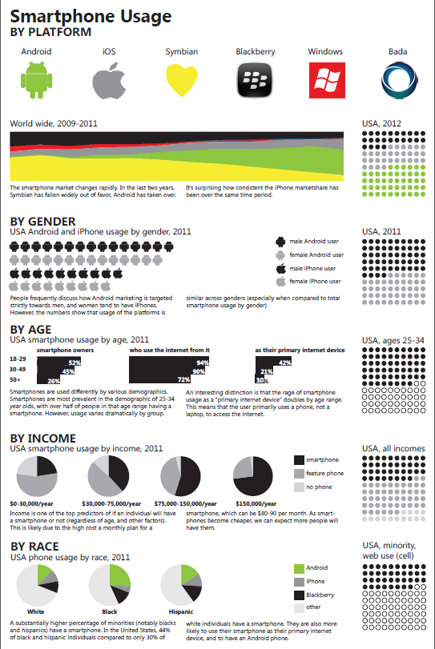
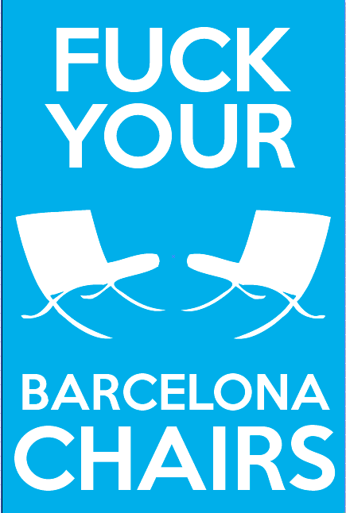

Ellen Chisa
About | Writing | Speaking | Portfolio | Mentoring
My day job is as a Product Manager. I've been fortunate
enough to work on some projects that I really love. Here's
a little more about each of them.
Kickstarter Advanced Search
Advanced Search was the feature that made me want to work at Kickstarter. It drove me insane that I couldn't find projects in "Category + Seattle." The shipped version allows users to create their own combination of filters.
Some of my favorites:
- Projects that I have starred, but not backed.
- Art projects that my friends have backed.
- Food projects in Seattle.

{kind=link}
Kickstarter Start Page
We re-designed the Start Page to try to give creators more information about what running a project on Kickstarter is actually like. This included specific sections for each category (with example projects) and a full tools walkthrough.

Kickstarter Video Mode
Video mode is an alternate approach to discovery projects on Kickstarter. It gives you a feeling of stumbling through projects individually, rather than selecting one from a set.

Microsoft Windows Phone 8 Office Hub
At Microsoft, I worked on the Office Hub for Windows Phone 8, including the Recent Documents list and Email Attachments.
 {kind=link}
{kind=link}
PowerPoint Broadcast Viewer for Symbian
Blank in Blank
When I joined Kickstarter I wanted to do a quick project to brush up on Ruby/Rails. I also realized I'd spent a long time learning about interesting events in Seattle, and wanted to a way to not have that knowledge be lost when I moved to NYC. I'm still interested in this problem space: how do you find good/relevant events to your career when you move to a new city? This project also let me try out Twitter Bootstrap, using Facebook auth, and TypeKit.
{kind=link}
{kind=link}
{kind=link}
NotesTo.Us
Tom and I wanted to make something that would let us keep cards in the mail around a bit longer - so we made a cardholder, and a digital card holder!

{kind=link}
Design
Phone OS Marketshare
Made this for HCDE511 - Information Design.
{kind=link}
Fuck Your Barcelona Chairs
Personal Work to hang in my bedroom.
{kind=link}
Other
ShapeLOVE
SHAPE Love is a global photo project exploring the theme of 'love' in over 200 cities around the world. These photos are curated by a collective of 250 people who are either Global Shapers or Young Global Leaders, both of which are World Economic Forum initiatives. Each city is exploring the theme of 'love' by responding to: "in our city, this is love," and "in our city, this needs love."